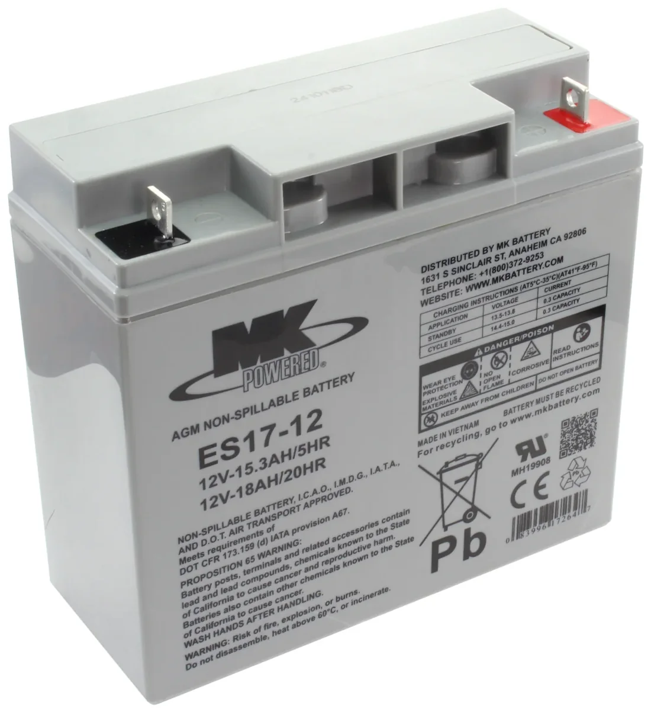
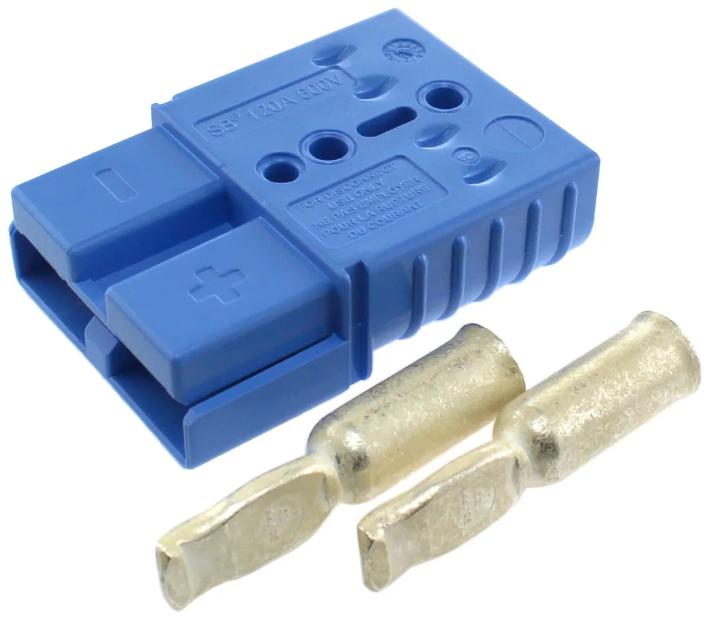

Battery crimp resistance testing
| Team | FIRST Robotics, Team 1771 |
|---|---|
| Type | Applied research |
| Dates | 2025 |
Our 12V 18Ah competition batteries were dying faster than they should, mid-event, with charge left in them. Rather than keep replacing them I tested whether the connection itself was the problem.
The suspect
FRC robots run a single 12V 18Ah sealed AGM battery — ours are MK ES17-12s. The rules allow one battery and one connector type, so when a battery reads healthy on a charger but sags under load on the field, the fault is either inside the cell or in the few inches of lead and connector between it and the robot.


That connector is an Anderson SB120, rated 120 A. A drivetrain pulling current through a poor crimp turns the joint into a heater: resistance there drops voltage before it ever reaches the robot, and the brownout looks exactly like a flat battery from the driver's station.
Method
I assembled all three connection types myself and measured start and end resistance on each with a multimeter: SB120 crimps alone, soldered leads alone, and crimps with the joint also soldered. Each was run three times to keep a single bad seating from deciding the result, and every reading was taken after holding the probes for 20 seconds so the measurements were taken at the same point on the meter's settle rather than whenever the number looked stable.
The useful comparison is not which number is lowest in isolation but how consistent each method is across its three trials — a connection method that is excellent when perfectly executed and poor when rushed is the wrong choice for a pit crew replacing a battery between matches.
Why it mattered
It is a small experiment and it decided something real: whether we spent the season buying batteries or fixing the thing that was killing them. It also changed how the team builds leads — the result is only useful if the person crimping the next one knows which method to use.